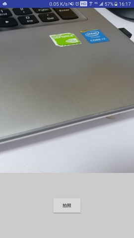
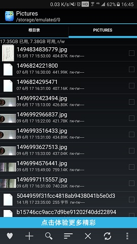

在 Android-Camera之简单使用 这篇博客里，简单介绍了利用系统自带的 Camera 应用进行拍照，录制视频，以及 Android N 以上应用间文件共享等。
本文将着重讲解，如何利用 SurfaceView 进行相机的预览，利用 Camera 进行一些自己的定制，从而完成我们的需求。
尽管在 Android 5.0(API 21) 之后 Google 推荐使用 android.hardware.camera2，但目前市场上有相当一部分系统还在 5.0 以下，所以学好怎样使用 Camera 也很有必要。
SurfaceView
从 SurfaceView官方文档 来看，SurfaceView 内部专门提供了一个 Surface 来进行绘制图像。可以通过控制 SurfaceHolder 来对其进行控制，也可以通过它监控 Surface 的状态。
自定义Camera
现在以一个简单的拍照应用为例，大致地梳理一遍自定义Camera的流程
布局
现在创建一个布局界面如下所示：

其中代码如下：
1
2
3
4
5
6
7
8
9
10
11
12
13
14
15
16
17
18
19
20
21
22
23
24
25
26
27
| <?xml version="1.0" encoding="utf-8"?>
<RelativeLayout
xmlns:android="http://schemas.android.com/apk/res/android"
android:layout_width="match_parent"
android:layout_height="match_parent">
<SurfaceView
android:id="@+id/surfaceView"
android:layout_width="match_parent"
android:layout_height="match_parent"
android:layout_above="@+id/fl"/>
<FrameLayout
android:id="@+id/fl"
android:layout_width="match_parent"
android:layout_height="200dp"
android:layout_alignParentBottom="true">
<Button
android:layout_width="wrap_content"
android:layout_height="wrap_content"
android:layout_gravity="center"
android:onClick="onClick"
android:text="拍照"/>
</FrameLayout>
</RelativeLayout>
|
初始化与释放相机
初始化相机和释放相机，我们分别放在 onResume() 和 onPause() 里面执行。
1
2
3
4
5
6
7
8
9
10
11
12
13
14
15
16
| @Override
protected void onResume() {
super.onResume();
handler.postDelayed(new Runnable() {
@Override
public void run() {
initCamera();
}
}, 10);
}
@Override
protected void onPause() {
super.onPause();
releaseCamera();
}
|
这里为啥我会加个延时 10ms 初始化？主要是因为这样的初始化在我这个三星C7000手机上并不能正常预览，出现黑屏。我怀疑是 Camera 一定要等 Surface 初始化完成之后执行预览，才能正常工作吧。
打开相机和释放相机代码如下：
1
2
3
4
5
6
7
8
9
10
11
12
13
14
15
16
17
18
19
20
21
22
23
24
25
26
27
28
29
30
31
32
33
34
35
36
37
38
39
|
private boolean safeOpenCamera(int id) {
releaseCamera();
try {
mCamera = Camera.open(id);
} catch (Exception e) {
e.printStackTrace();
}
return mCamera != null;
}
private void initCamera() {
if (!safeOpenCamera(Camera.CameraInfo.CAMERA_FACING_BACK)) {
Log.d(TAG, "initCamera: 打开相机失败");
return;
}
try {
mCamera.setPreviewDisplay(mHolder);
Camera.Parameters parameter = mCamera.getParameters();
parameter.setRotation(90);
mCamera.setParameters(parameter);
mCamera.setDisplayOrientation(90);
mCamera.startPreview();
} catch (IOException e) {
e.printStackTrace();
}
}
private void releaseCamera() {
if (mCamera != null) {
mCamera.setPreviewCallback(null);
mCamera.stopPreview();
mCamera.release();
mCamera = null;
}
}
|
拍照
最后就是点击按钮拍照了。我们把拍好的照片存储在外部存储里面，并保存为JPEG格式（这个函数第三个回调方法返回的即为JPEG格式的数据）。
1
2
3
4
5
6
7
8
9
10
11
12
13
14
15
16
17
18
19
20
| public void onClick(View view) {
mCamera.takePicture(null, null, new Camera.PictureCallback() {
@Override
public void onPictureTaken(byte[] data, Camera camera) {
LogUtil.d("ControlCameraActivity#onPictureTaken() : data size = " + data.length);
File file = new File(Environment.getExternalStoragePublicDirectory(Environment.DIRECTORY_PICTURES).getAbsolutePath() + File.separator + System.currentTimeMillis() + ".jpg");
FileOutputStream out;
try {
file.createNewFile();
out = new FileOutputStream(file);
out.write(data);
out.close();
} catch (IOException e) {
e.printStackTrace();
Toast.makeText(ControlCameraActivity.this, "出错了", Toast.LENGTH_SHORT).show();
}
mCamera.startPreview();
}
});
}
|
这里需要注意的是，在每次调用 mCamera.takePicture() 这个方法之后，SurfaceView 都会停止预览，所以最后需要让它继续预览，加上 mCamera.startPreview()
拍完之后，利用文件管理软件进行查看，如下所示，照片已经按我们的需求存储起来啦。

总结
以上我们实现了一个简单拍照的功能，里面包含了相机的初始化与释放，以及初始化释放的时机，以及拍完照片之后的处理。但是有几个问题是没有解决的。
- 1，相机预览的角度问题，上述例子只是简单粗暴的设置了一个测试好的角度，但是Android设备众多，不一定能适配所有设备
- 2，相机拉伸问题：这里的SurfaceView的高度是随意指定的，没有通过
parameter.setPreviewSize() 指定设备支持的预览宽高
这些问题留待下一篇博客进行解决，敬请期待~~